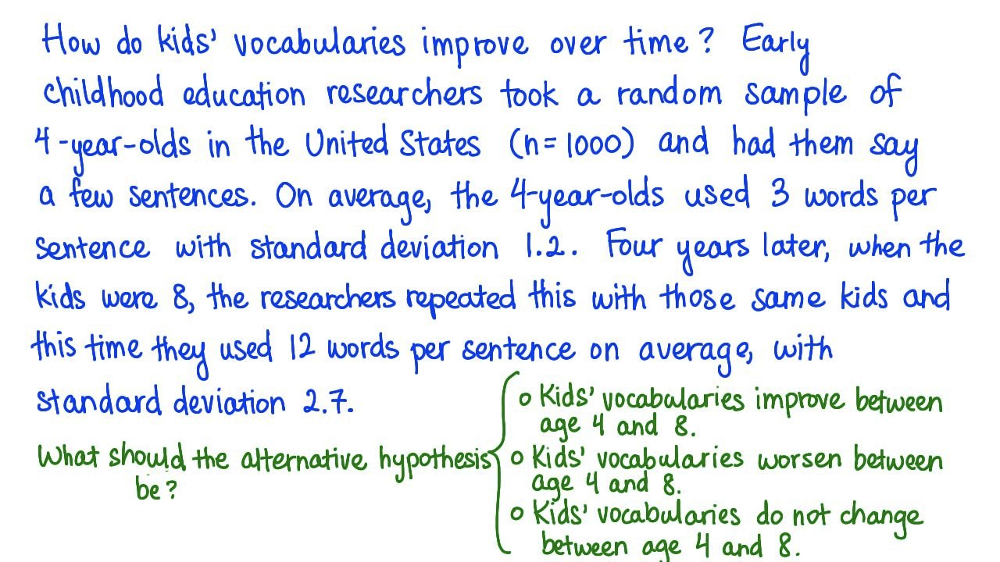

07. 7. 词汇量 - 对立假设
- 词汇量 - 对立假设
Start Quiz:

INSTRUCTOR NOTE:
儿童的词汇量是如何随时间增长的？早期儿童教育研究者随机选取了 1000 名 4 岁美国儿童，让他们说几个句子。平均下来，4 岁儿童每句话使用 3 个单词，标准偏差为 1.2。4 年后，当这些孩子 8 岁时，研究者对同一些孩子进行同样的实验，他们平均每句话使用 12 个单词，标准偏差为 2.7。
这个实验中的对立假设可能是什么？
- □ 从 4 岁到 8 岁，儿童的词汇量会增长
- □ 从 4 岁到 8 岁，儿童的词汇量会下降
- □ 从 4 岁到 8 岁，儿童的词汇量不变